왜 만들었고, 왜 어르신인가
이 영상은 해외 사례가 아니라 채널 운영자가 직접 만든 앱 이야기예요. 아래 시연 화면에서 카톡 입력창 오른쪽 아래, 키보드 위에 떠 있는 초록색 마이크 버튼이 이 앱이에요. 이걸 누르고 보낼 말을 대충 말하면 정리된 글이 입력창에 들어가요. 보내기는 사람이 직접 눌러요.
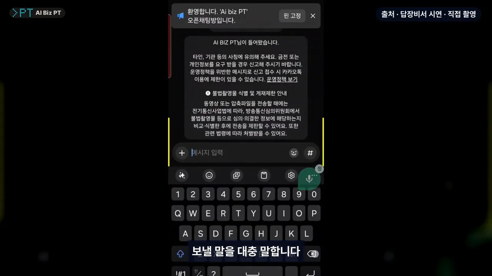
키보드 마이크로는 부족했던 이유
시작은 스마트스토어였어요. 손님 문의마다 내용은 비슷한데 매번 정중하게 타자를 쳐야 하니 은근히 번거로웠대요. 휴대폰 키보드에도 마이크 버튼은 있어요. 그런데 그건 말을 그대로 받아 적을 뿐, 손님에게 보낼 말인지 친구에게 보낼 말인지 같은 맥락은 몰라요.
슬라이드가 그 차이를 한 줄로 보여 줘요. 위쪽 따옴표가 사람이 실제로 한 말이고, 화살표 오른쪽이 앱이 바꿔 준 문장이에요.
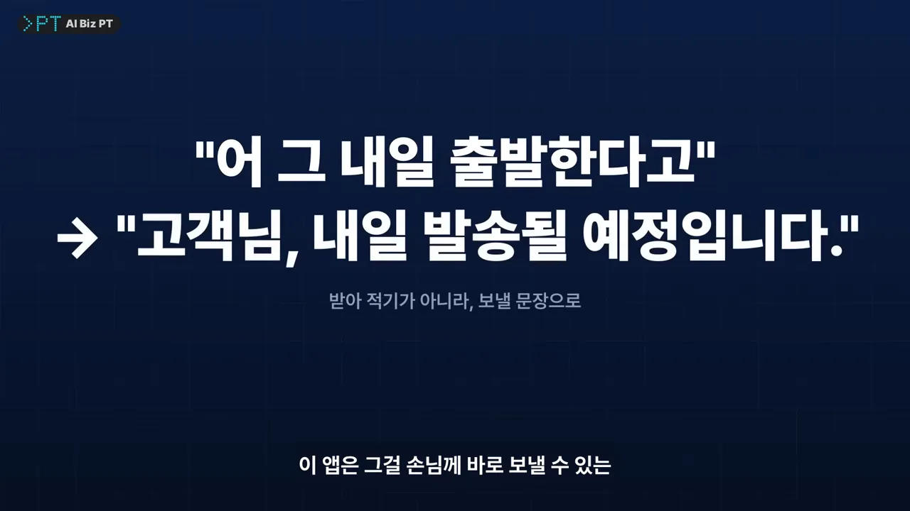
써 보니 편했대요. 버튼이 늘 떠 있으니 바로 쓰게 되고, 나중엔 없으면 불편할 정도였어요.
보이시 사례에서 방향을 바꾸다
그러다 채널 7편에서 '보이시'라는 받아쓰기 앱을 다뤘어요. 독수리 타법으로 이메일 하나에 며칠씩 걸리던 아버지를 위해 아들이 만든 앱이에요. 직장을 다니면서 정기 매출이 한 달 약 1,540만 원이었대요. 이 시장에는 투자받은 큰 경쟁자가 있었지만, 보이시는 정면으로 붙지 않고 사용자와 직접 통화하며 진짜 손님을 찾았어요.
운영자가 놀란 건 매출보다 아래 슬라이드의 숫자였어요. 보이시 사용자의 20~30%가 노인과 장애인이었고, 이분들이 앱을 가장 좋아했대요.
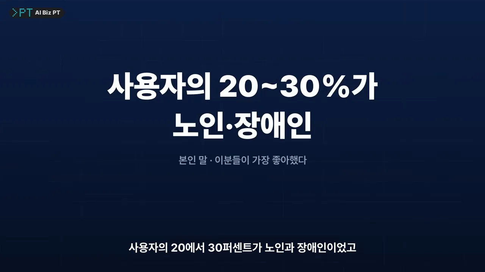
그 불편은 운영자도 이미 겪었고 앱도 만들어 둔 상태였어요. 다만 자기 일만 생각했던 거예요. 떠올려 보니 부모님도 키보드가 낯설어서 카톡 답장을 잘 안 하신대요. 그래서 부모님 세대도 쓸 수 있게 다시 만들었고, 이름을 '답장 비서'로 붙였어요.
답장 비서는 이렇게 써요
처음 켜면 허락할 것 세 가지
앱을 처음 켜면 한 화면에 허락할 것 세 가지가 번호를 달고 차례로 나와요. 1번 마이크, 2번 다른 앱 위에 버튼 띄우기, 3번 입력창에 넣기·화면 읽기예요. 각 항목 아래 초록 버튼을 누르면 해당 설정으로 넘어가요.
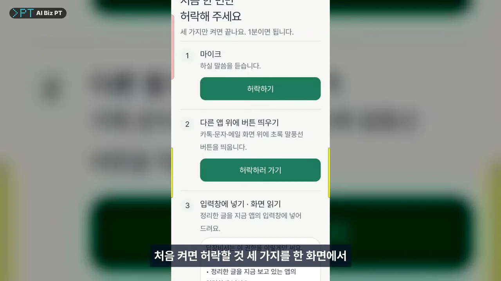
3번은 화면을 읽는 권한이라 따로 신경 썼어요. 켜기 전에 무엇을 언제 읽는지 먼저 보여 주고 동의를 받아요. 아래 화면의 글머리 목록이 그 설명이에요. 정리한 글을 지금 보고 있는 앱의 입력창에 넣는다는 것, 화면의 글은 '손님 응대'에서 버튼을 누른 순간에만 읽는다는 것, 읽은 글은 정리를 위해 Google Gemini로 보내지만 어디에도 저장하지 않는다는 것, 주민·카드·전화번호 같은 숫자는 지운 뒤 보낸다는 것이 적혀 있어요.
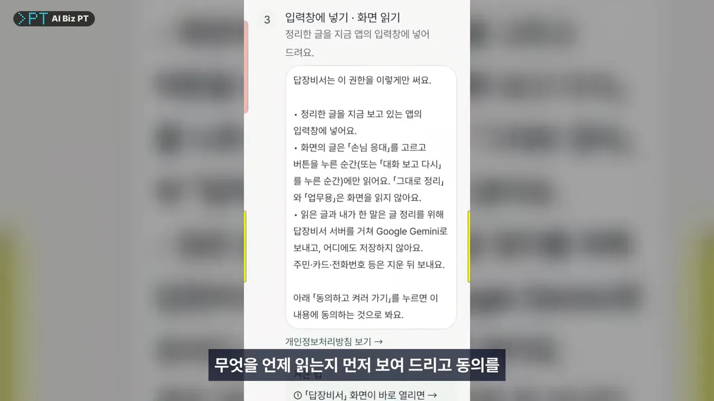
다 켜고 나면 카톡 어디서든 초록 버튼이 떠 있어요. 누르고 말하다가 멈추면 바로 정리된 글이 나와요. 아래 화면의 '다 됐어요' 창에서 위쪽 '내가 한 말'이 받아 적은 원문이고, 그 아래 초록 칸이 정리된 글이에요. 그 밑에 '더 짧게', '더 공손하게', '다시 말하기' 버튼이 있어요.
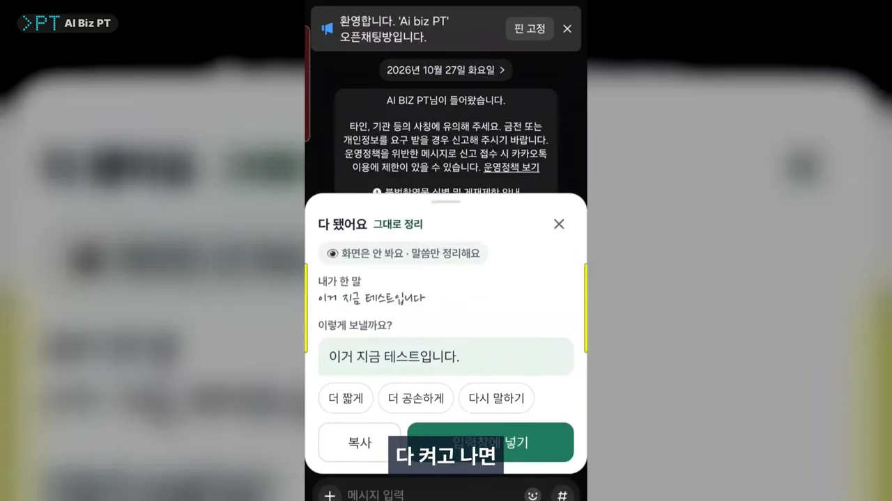
쓰임새 세 가지
창 위쪽에서 고르는 쓰임새는 세 가지예요. 슬라이드의 세 줄이 각각 무엇을 하는지 줄여 적은 거예요. 앱을 처음 만든 이유였던 '손님 응대'만 화면을 읽어요.
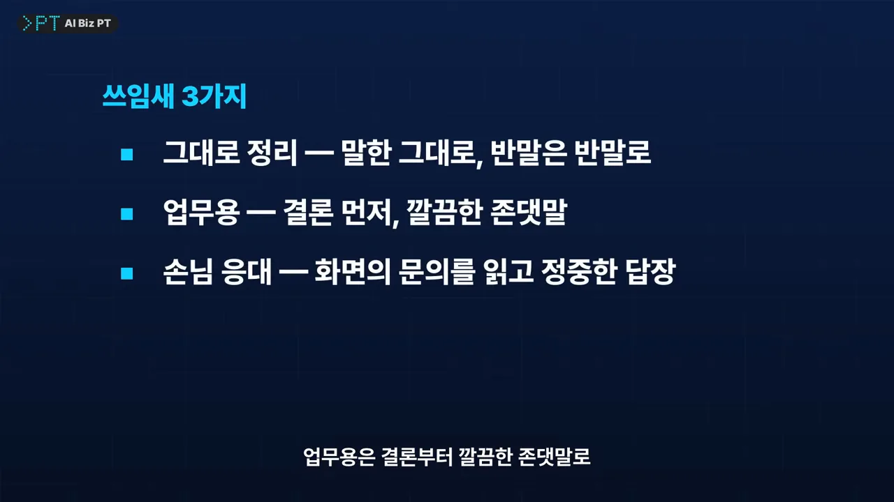
말투는 바꾸지 않아요
가장 신경 쓴 규칙이에요. 슬라이드 위 줄이 말한 그대로이고, 아래 줄이 정리 결과예요. 띄어쓰기와 문장부호만 들어가고 반말은 그대로예요. 슬라이드 아래 회색 글씨가 규칙을 요약해요. 반말은 반말로, 없는 말은 보태지 않는다.
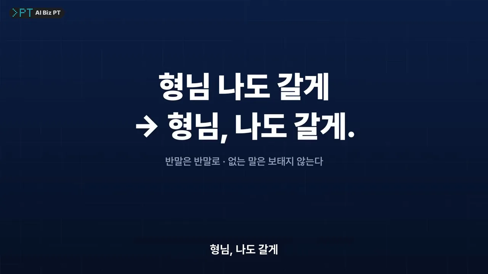
개인정보는 이렇게 지켜요
카톡을 다루는 앱이라 개인정보 원칙을 네 줄로 정리해 뒀어요.
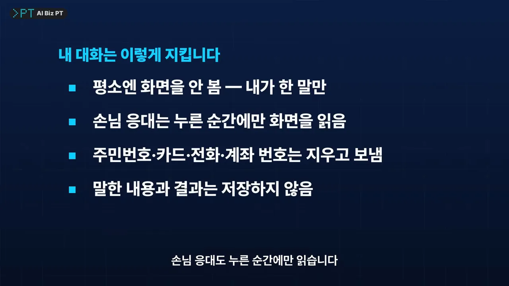
어제 고친 두 군데
직접 써 보면서 바로 고친 것도 있어요. 버튼이 양쪽 가장자리에만 붙어 있던 걸 화면 어디든 둘 수 있게 했어요. 또 말하는 동안 받아 적은 글이 실시간으로 보이니 오히려 느리게 느껴져서, 기본으로는 숨기고 정리된 글만 바로 보여 주게 바꿨어요.
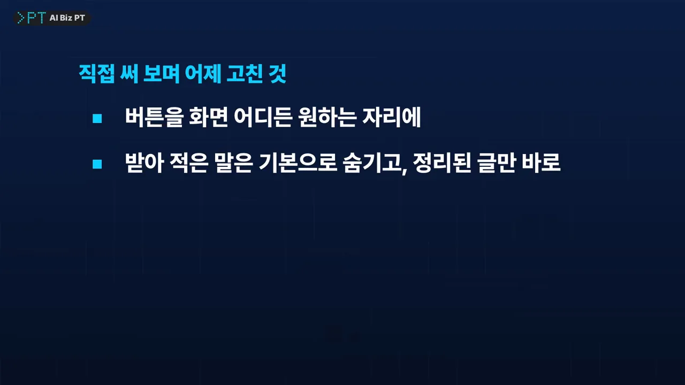
비용, 구조, 막힌 곳
제미나이로 바꾼 이유
처음엔 클로드와 GPT(Generative Pre-trained Transformer)를 붙였어요. 그런데 AI 사용료가 계속 마음에 걸렸대요. 채널 6편에서 다룬 회사가 떠올랐기 때문이에요. 손님이 늘수록 AI 요금이 한 달 10억 원대까지 불어난 곳이에요. 거기서 얻은 교훈이 '가격표보다 원가표가 먼저'였어요.
그래서 제미나이로 바꿨어요. 슬라이드의 큰 글씨가 한 번 쓸 때 드는 AI 원가예요. 아래 작은 글씨는 제미나이 플래시 모델 기준으로 운영자가 직접 계산했다는 뜻이에요.
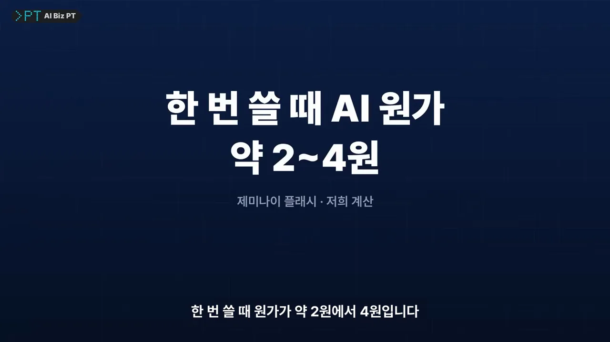
만든 구조
구조는 세 칸이에요. 아래 그림처럼 말을 글로 바꾸는 일은 휴대폰의 음성 인식이 하고, 운영자 서버는 그 글을 받아 구글 AI로 넘기는 중간 다리 노릇만 해요. 그림의 회색 글씨가 칸마다 영상이 짚은 안전장치예요.
영상 슬라이드도 같은 네 줄을 적어 둬요. 맨 위 줄의 '소리 파일 안 나감'과 셋째 줄의 '요금 폭주 방지'가 이 구조에서 가장 눈여겨볼 부분이에요.
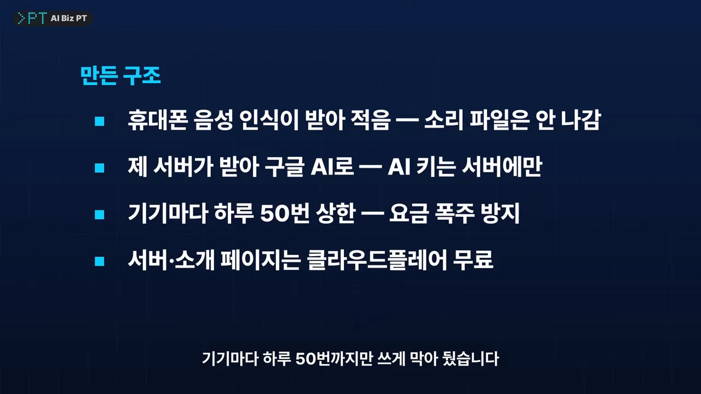
이렇게 막아 둔 덕분에 지금까지 이 앱에 새로 쓴 돈은 아래 슬라이드의 숫자가 전부래요. 작은 글씨처럼 그 돈도 거의 그대로 남아 있고, 서버는 무료예요.
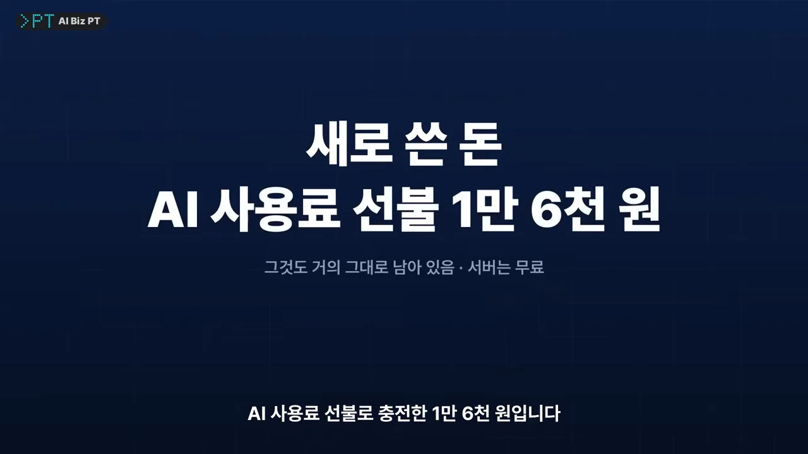
막힌 곳 네 번
만드는 동안 네 번 막혔어요. 슬라이드는 각 줄의 화살표 오른쪽에 어떻게 넘어갔는지까지 적어 둬요.
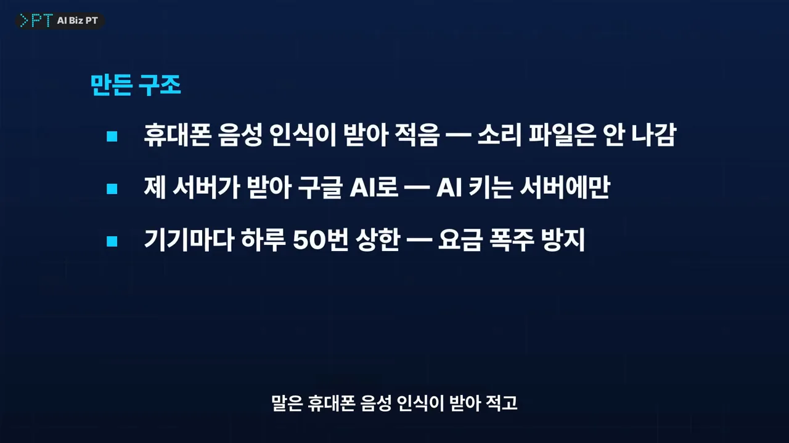
| 막힌 곳 | 어떻게 넘어갔나 |
|---|---|
| 쓰려던 구글 AI 모델이 새 사용자에게 닫혀 있었어요 | 최신 모델로 바꿨어요 |
| 한국에서 보낸 요청이 홍콩 거점을 거치며 '지역 미지원'으로 거절됐어요 | 미국 동부를 거쳐 보내도록 중계했어요 |
| 설치 파일이 삼성 '자동 차단'에 막혔어요 | 플레이 스토어로 배포하기로 했어요 |
| 새 개발자 계정은 테스터 12명이 14일을 채워야 정식 출시할 수 있어요 | 지금 테스터를 모으는 중이에요 |
해외 사례에서 가져온 다섯 가지
채널에서 해외 사례를 뜯어보며 배운 걸 이 앱에 그대로 써 보려고 해요. 영상은 다섯 편을 하나씩 짚는데, 편마다 가져온 교훈을 표로 모았어요.
| 가져온 편 | 그 사례에서 배운 것 | 답장 비서에 쓰는 법 |
|---|---|---|
| 7편 · 타게팅 | 투자받은 경쟁자와 정면으로 붙지 않고 진짜 손님을 찾았어요 | 키보드가 낯선 어르신, 업무 메시지가 많은 직장인, 손님 응대를 혼자 하는 1인 사업가처럼 큰 회사가 신경 안 쓰는 자리부터 가요 |
| 10편 · 내 일을 덜려고 만든 도구 | 자기 회사 면접을 덜려고 만든 도구가 상품이 됐어요 | 이 앱도 내 답장을 덜려고 만든 도구예요 |
| 3편 · 잘된 형식을 그대로 | 새 광고를 지어내지 않고 잘된 광고 형식을 따라 매출을 올렸어요 | 잘된 시연 영상 형식을 그대로 따라 해 볼 생각이에요 |
| 14편 · 댓글과 채널 하나 | 크게 만들기 전에 댓글에 사람들이 스스로 적는 말로 수요부터 확인했고, 채널은 하나로 좁혔어요 | 처음엔 이 채널 한 곳에서만 테스터를 모아 조회가 설치로 얼마나 바뀌는지 재 봐요 |
| 13편 · AI가 아니라 결과 | AI를 파는 게 아니라 결과를 팔았어요 | 이 앱이 파는 건 '답장을 미루지 않게 되는 것' 하나예요 |
첫 번째 타게팅에는 숫자도 붙였어요. 어르신만 해도 한국 60세 이상이 약 1,500만 명이고, 대부분 갤럭시를 쓴대요. 이 앱이 안드로이드 전용이라는 점과 맞물리는 숫자예요.
다섯 번째 교훈을 말할 때 화면에는 13편 썸네일이 떠 있어요. 위쪽 파란 띠의 'AI가 아니라 결과'가 이 편에서 가져온 교훈이고, 아래 자막이 그걸 답장 비서에 옮긴 한 줄이에요.
출시 조건과 사업이 될까
구글 플레이의 '12명 × 14일' 조건
마지막 벽은 구글 플레이였어요. 새 개발자 계정은 슬라이드처럼 테스터 12명이 14일 동안 써야 정식 출시를 신청할 수 있어요. 비공개 테스트 심사는 영상을 올리기 전날 새벽에 통과했고, 이제 테스터만 남았대요.
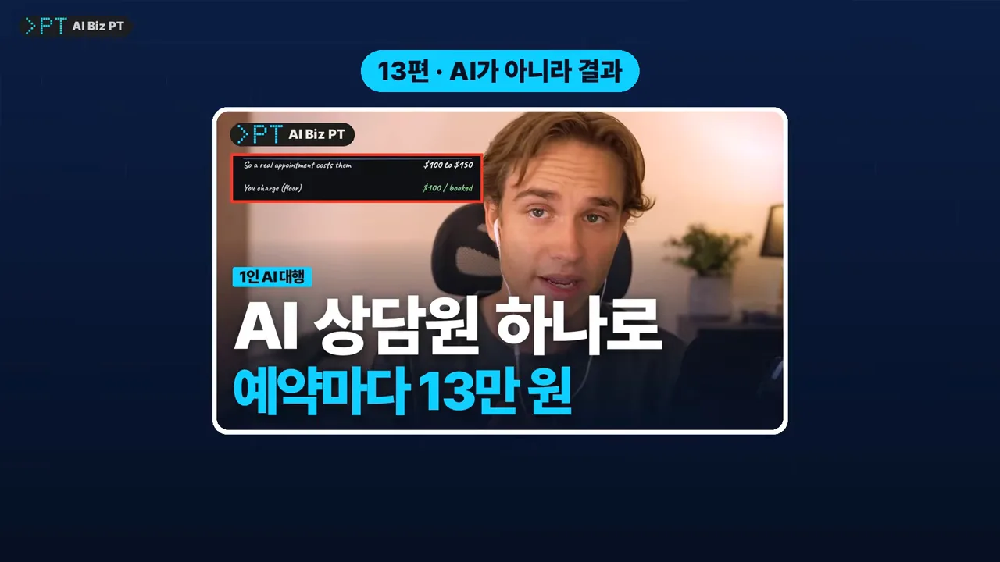
테스트 기간에는 무료이고 안드로이드 폰이면 돼요. 운영자는 업무 메시지나 손님 응대에 써 보는 것과 함께, 부모님 폰에 깔아 어르신이 실제로 쓰실 수 있는지 보는 걸 특히 바란대요.
사업 계획서의 결론은 '조건부 예'
시간이 되면 실제 사업으로 해 볼 생각도 있어서 사업 계획서를 먼저 써 봤대요. 아래 화면 맨 위의 '조건부 예' 표시와 제목 한 줄이 결론이에요. 그냥 받아쓰기로는 지지만, '어른 카톡'으로는 빈자리가 있다는 거예요.
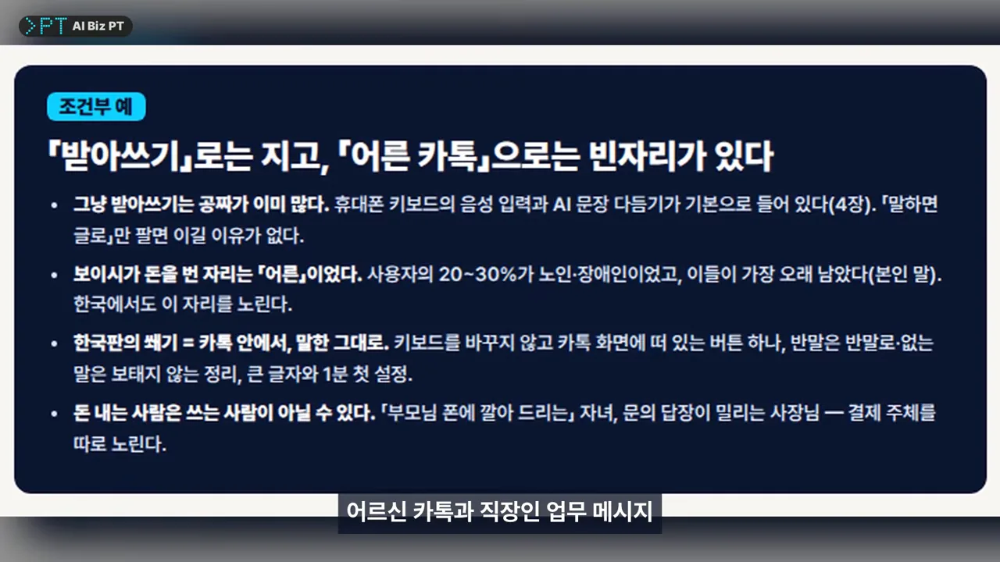
계획서의 근거는 이래요. 그냥 받아쓰기는 이미 공짜로 많아요. 휴대폰 키보드에 음성 입력과 AI 문장 다듬기가 기본으로 들어 있으니까요. 반면 대충 말해도 보낼 문장이 되는 자리, 곧 어른 카톡, 직장인 업무 메시지, 1인 사업자 손님 응대에는 빈틈이 있다고 봤어요. 넷째 줄은 돈 내는 사람이 쓰는 사람이 아닐 수 있다는 점이에요. 부모님 폰에 깔아 드리는 자녀처럼요.
경쟁자는 누구인가
계획서에는 겹치는 기능을 가진 앱을 정리한 표도 있어요. 화면 글씨가 작아서 핵심만 옮겨 적었어요. 맨 오른쪽 칸 '우리와 다른 점'이 운영자가 본 차이예요.
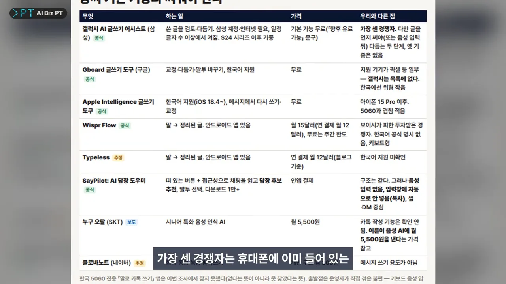
| 무엇 | 가격 | 답장 비서와 다른 점 (계획서 기준) |
|---|---|---|
| 갤럭시 AI 글쓰기 어시스트 (삼성) | 기본 기능 무료 | 가장 센 경쟁자예요. 다만 글을 먼저 써야 다듬는 두 단계이고 옛 기종엔 없어요 |
| Gboard 글쓰기 도구 (구글) | 무료 | 지원 기기가 픽셀 등 일부라 갤럭시는 목록에 없어서 한국에선 위협이 작아요 |
| Apple Intelligence 글쓰기 도구 | 무료 | 아이폰 15 Pro 이후라 5060과 겹치는 부분이 적어요 |
| Wispr Flow | 월 15달러 | 보이시가 피한 투자받은 경쟁자예요. 한국어 공식 명시가 없고 키보드형이에요 |
| SayPilot: AI 답장 도우미 | 인앱 결제 | 떠 있는 버튼으로 채팅을 읽는 구조는 같아요. 하지만 음성 입력이 없고 입력창에 자동으로 넣지 않아요 |
| 누구 오팔 (SKT(SK Telecom)) | 월 5,500원 | 시니어 특화 음성 AI인데 카톡 작성 기능은 확인되지 않았어요. 어른이 음성 AI에 월 5,500원을 낸다는 가격 참고가 돼요 |
영상이 말한 '비슷한 앱 하나'가 표의 SayPilot이에요. 구조는 같지만 음성 입력과 입력창 넣기가 없다는 점이 답장 비서와 갈리는 지점이에요.
몇 명이면 한 달 1,000만 원이 남을까
가격은 아직 안 정했지만 계산은 해 봤대요. 표의 둘째 칸 '1명당 남는 돈'은 구독 가격에서 Play 수수료 15%와 AI 원가(하루 5번 쓰면 한 달 약 900원)를 뺀 값이에요. 셋째 칸은 1,000만 원을 그 돈으로 나눈 사람 수예요.
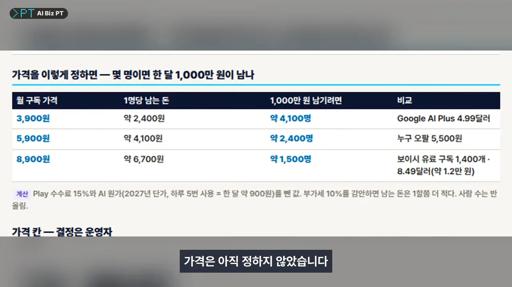
보이시의 유료 구독이 1,400개였으니, 8,900원에 1,500명은 불가능한 숫자는 아니지만 쉬운 숫자도 아니라고 봤어요. 아래에서 가격과 하루 사용 횟수를 바꿔 보면 이 계산이 얼마나 가격에 민감한지 보여요.
1명당 남는 돈 0원
1,000만 원을 남기려면 약 0명이 필요해요
가정: 영상 표의 'AI 원가 하루 5번 = 한 달 약 900원'을 한 번에 6원으로 나눠 셈했어요. Play 수수료 15%는 영상 표 그대로이고 부가세는 빼지 않았어요.
- 가격을 8,900원에 두면 약 1,500명이 나와요. 보이시 유료 구독 1,400개 막대와 거의 같은 높이라는 게 '불가능하진 않지만 쉽지 않다'는 말의 뜻이에요.
- 가격을 3,900원으로 내려 보세요. 필요한 사람이 약 4,100명으로 세 배 가까이 늘어요.
- 하루 사용 횟수를 상한인 50번까지 올려 보세요. 많이 쓰는 사람일수록 AI 원가가 남는 돈을 깎아요. 기기마다 하루 50번 상한을 둔 이유예요.
이렇게 망할 수 있다
망하기 쉬운 지점도 세 가지 적어 뒀어요. 첫째 줄의 '허락할 것 3가지'는 앞에서 본 첫 설정 화면이에요. 어르신께는 권한 세 가지가 큰 벽이거든요.
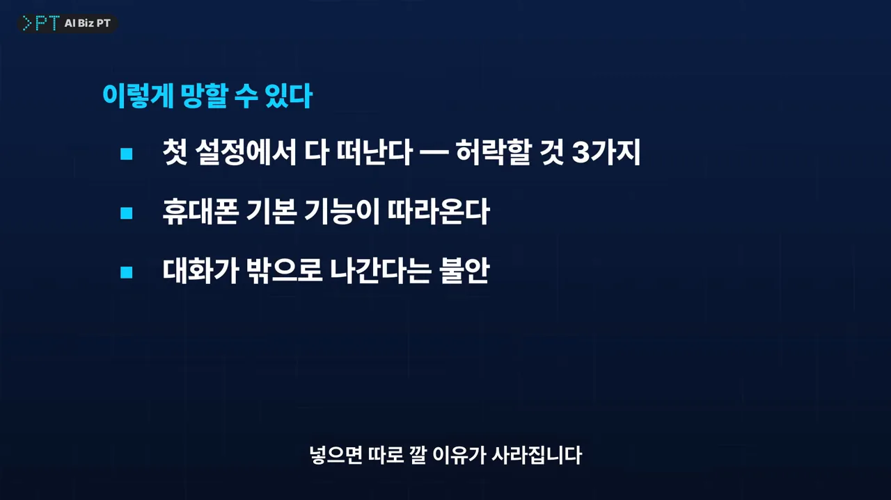
그래서 이번 테스트에서 가장 보고 싶은 건 어르신이 도움 없이 첫 설정을 끝낼 수 있는지예요. 앞으로 30일 계획은 아래 슬라이드 두 줄에 이어서, 마지막 2주 동안 실제로 쓰는 횟수를 보며 한 번 더 고치고 정식 출시를 신청하는 순서예요.
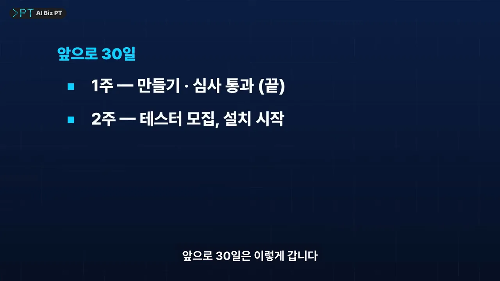
해외 사례를 보기만 하는 게 아니라 직접 해 보면 어디서 막히는지, 그것까지 이 채널에서 같이 보시죠.
— 영상 07:52